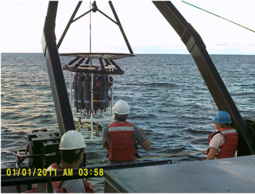

Mercury Cycling and Bioaccumulation in the Great Lakes
Template #79

U.S. Geological Survey scientists are improving the health of the Great Lakes sport and commercial fisheries by examining the processes that result in mercury entering the food chain, determining how it affects the fish, and helping to evaluate the implications for public health.
This project has resulted in the first complete data set (water, sediment and biota) for mercury and methylmercury across all five Great Lakes, and is the result of collaboration between USGS and USEPA during the biannual monitoring cruises of the Great Lakes in April and August. Sampling is facilitated with a trace-metal clean sampling rosette that the GLRI effort has purchased to upgrade capabilities of the Guardian.
Our scientists will provide decision makers with a scientific understanding of mercury processes that will help them to recommend actions that could help restore a healthier fishery. Elevated levels of mercury are observed in sport and commercial fish across the Great Lakes basin, which result in consumption advisories and beneficial use impairments. However, a good understanding of the primary sources and the factors regulating greater versus lesser levels of mercury in fish among the Great Lakes has remained unresolved.
The study has identified two sources of methlymercury (the form of mercury in consumable fish) that were previously unrecognized - stream discharge was previously the only known source. The first is methylmercury formation in the water column of the lakes, and which has a controlling influence on the spatial distribution of methylmercury in surface waters of the Great Lakes. We have documented that in the nearshore zone where annually large masses of Cladophora (filamentous algae) wash ashore, significant methylmercury formation occurs. In combination, the robust data set and the new understanding of methylmercury sources for the Great Lakes will help inform decision makers and restoration managers on effective steps toward reducing fish mercury contamination. This project is linked to two other USGS and USEPA funded GLRI efforts to develop, for the first time a whole ecosystem (lakes and watersheds) model that will allow us to forecast responses of Great Lakes fish mercury levels to changes, such as: reduced mercury loading, changes in nutrient loading, and climate change.
A journal article was produced that provides an improved understanding of the factors controlling methylmercury and inorganic mercury in Lake Trout from the Great Lakes. Results show that methylmercury elimination rates for fish have been overestimated in previous studies, and thus the fish have a much harder time ridding themselves of toxic methylmercury than previously thought.
Madenjian, C. P. David, S. R. and Krabbenhoft, D. P., 2012, Trophic Transfer Efficiency of Methylmercury and Inorganic Mercury to Lake Trout Salvelinus namaycush from Its Prey, Arch Environ Contam Toxicol, DOI 10.1007/s00244-012-9767-2.
David Krabbenhoft, dpkrabbe@usgs.gov 608-821-3843